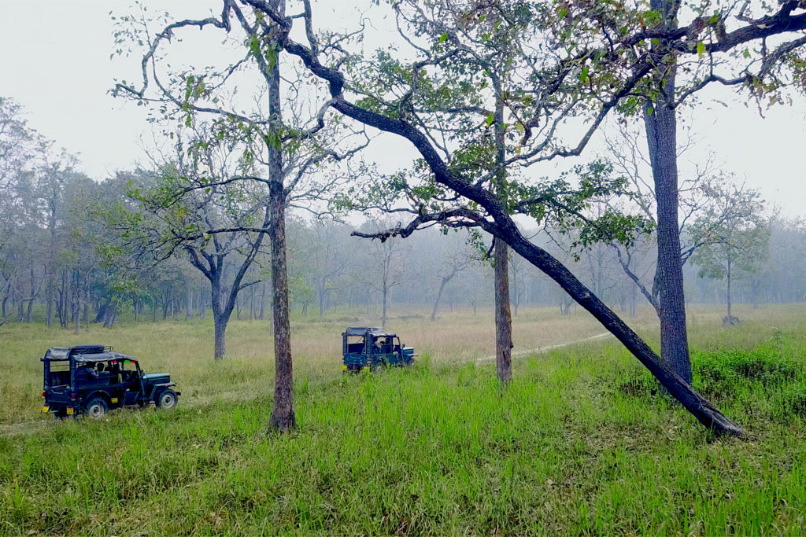
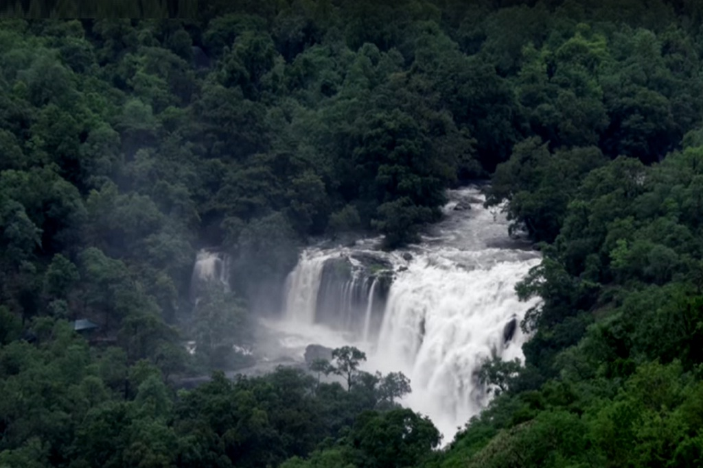

Wayanad Wildlife Sanctuary

Eravikulam National Park

Neyyar lion safari

Discover the soul of God’s Own Country through its culture, nature, and flavors.
Kerala’s Responsible Tourism initiative brings travelers closer to local communities while supporting sustainable livelihoods. Villages open their doors to showcase traditions, handicrafts, and everyday life, allowing visitors to enjoy authentic experiences while ensuring benefits to the local population.
Kerala is a pioneer in eco-tourism with its pristine backwaters, lush forests, and protected wildlife sanctuaries. From bamboo rafting in Periyar to trekking in Silent Valley, Kerala offers eco-friendly travel experiences that promote conservation and harmony with nature.
The state is renowned for its classical artforms like Kathakali, Mohiniyattam, Kalaripayattu, and Theyyam. Each performance reflects centuries of tradition, storytelling, and spirituality, offering visitors an insight into Kerala’s rich cultural heritage.

Kerala cuisine is a feast of spices, flavors, and textures. From the traditional Sadhya served on banana leaves to seafood delicacies flavored with coconut and curry leaves, the culinary experience in Kerala is unforgettable for every traveler.